Partners
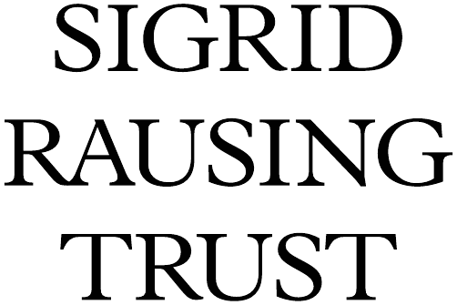
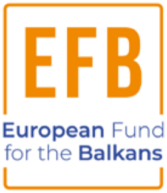
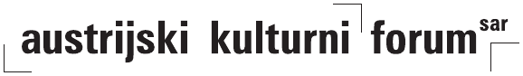
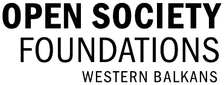
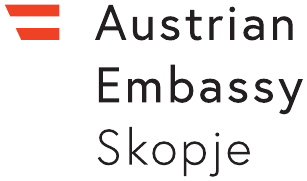
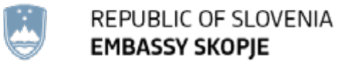
Friends of the project
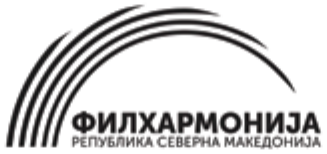
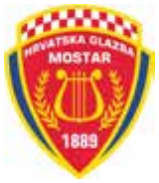
Partners
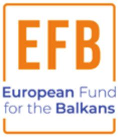
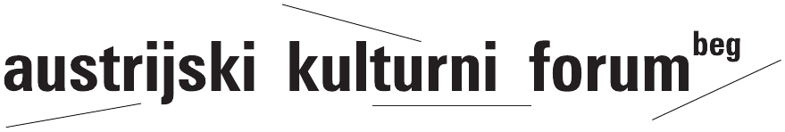
Friends of the project
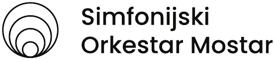
Partners
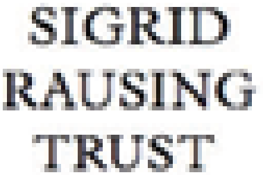
Friends of the project
Festival Maribor
OKC Abrašević
Mostar Rock School
Pavaroti Centar
Gradska dvorana, Novi Sad
Slovenačka ambasada, Beograd
Partners

Partners

Friends of the project
KotorArt, Kotor
PortoMontenegro, Tivat
Lumbardhi, Prizren
Mali Mozart, Sarajevo
Bitef festival, Belgrade
Drugstore, Belgrade
Lauba, Zagreb
Maribor Festival, Maribor
Berghain, Berlin
Month of Contemporary Music, Berlin

Friends of the project
Music school “Vida Matjan”, Kotor
Theatre City, Budva
Loumbardhi Foundation, Prizren
Mali Mozart, Sarajevo
Center for Cultural Decontamination, Belgrade
Partners

Friends of the project
Jugokoncert, Belgrade
A Tempo festival, Podgorica
Belgrade Music Festival – BEMUS
Croatian Composers' Society
Faculty of Music, Skopje
Festival Ljubljana
Kammerfest, Priština
Music Academy Pristina
Music Biennale Zagreb
Montenegrin Music Center
Novi Sad Music Festival – NOMUS
Ohrid Summer Festival
Re Musica festival, Pristina
Sarajevo Winter Festival
Serbian Festivals Association – SEFA
Zagreb Concert Management
Youth and Music of Novi Sad